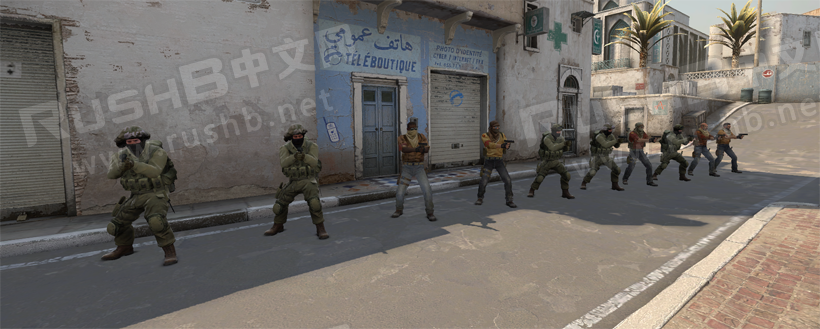

CSGO RushB中文网
CSGO RushB中文网
本文将列出CSGO单机模式（或自建服）下常用的机器人（BOT）相关控制台指令命令，有需要的玩家可以查看。
以下大部分指令需要先输入sv_cheats 1;才可生效。
*进入地图后，按“~”可开启控制台，若没有请在“游戏设置”——“游戏”——“启用开发者控制台（~）”选“是”。

bot_add
bot_add
该命令用于为当前游戏添加一个BOT，如有需要可指定阵营、难度和名称，格式为bot_add 阵营 难度 名称，比如：
bot_add ct hard Mark
上面指令为添加一个名为马克、困难难度的CT BOT
BOT难度代码：
- easy – 简单
- normal – 中等
- hard – 困难
- expert – 专家
注意，BOT名称不能自定义，需要用游戏内提供的名称，由于太多就不提供了。
其他，以下指令可添加指定阵营的BOT，同样可指定难度和名称。
bot_add_ct
bot_add_t
bot_difficulty
该命令用于修改当前游戏的BOT难度，数字代表难度，如下：
- 0 – 简单
- 1 – 中等
- 2 – 困难
- 3 – 专家
例如将机器人难度调整为专家：
bot_difficulty 3
bot_dont_shoot
该命令用于禁止BOT射击，1为禁止射击，0为可射击。
禁止射击：
bot_dont_shoot 1
允许射击：
bot_dont_shoot 0
bot_kill
该指令用于淘汰当前游戏的BOT，也可以指定难度或阵营、名称。比如淘汰困难难度的BOT，：
bot_kill hard
bot_kick
该命令用于将BOT踢出当前服务器，同样可以指定难度或阵营、名称，比如踢出名为奥佩的BOT，方法和bot_add一样：
bot_kick Opi
bot_crouch
该命令用于使所有BOT蹲下，1开启，0关闭。
强制BOT蹲下：
bot_crouch 1
取消BOT蹲下：
bot_crouch 0
bot_stop
该指令用于设置BOT是否静止。
BOT静止：
bot_stop 1
BOT行动：
bot_stop 0
bot_mimic
该指令用于BOT模仿玩家行动，比如移动、蹲、跳、攻击，不支持切换武器。
BOT模仿：
bot_mimic 1
BOT不模仿：
bot_mimic 0
bot_mimic_yaw_offset
配合bot_mimic使用，用于设置BOT面朝玩家的角度。
BOT正面对玩家：
bot_mimic_yaw_offset 180
BOT和玩家同方向：
bot_mimic_yaw_offset 360
bot_crouch
强制所有BOT蹲下：
bot_crouch 1
取消蹲下：
bot_crouch 0
bot_knives_only
该指令用于是否强制BOT使用匕首，1开启，0关闭。
只允许BOT使用刀：
bot_knives_only 1
关闭BOT强制用刀：
bot_knives_only 0
bot_pistols_only
指令用于强制BOT是否只使用手枪。
BOT只使用手枪
bot_pistols_only 1
不强制使用
bot_pistols_only 0
bot_snipers_only
该指令用于强制BOT是否只是用狙击枪。
只允许BOT使用狙击枪：
bot_snipers_only 1
不强制：
bot_snipers_only 0
bot_allow_grenades
该指令用于是否允许BOT使用手榴弹，1开启，0关闭，但BOT不一定会使用。
允许BOT使用投掷物：
bot_allow_grenades 1
禁止BOT使用投掷物：
bot_allow_grenades 0
bot_allow_machine_guns
该指令用于是否允许BOT使用机枪，1开启，0关闭。
允许BOT使用重机枪。
bot_allow_machine_guns 1
禁止BOT使用：
bot_allow_machine_guns 0
bot_allow_sub_machine_guns
该指令用于是否允许BOT使用微冲，1开启，0关闭。
允许BOT使用微冲：
bot_allow_sub_machine_guns 1
禁止BOT使用：
bot_allow_sub_machine_guns 0
bot_allow_pistols
该指令用于是否允许BOT使用手枪，1开启，0关闭。
允许BOT使用手枪：
bot_allow_pistols 1
禁止BOT使用：
bot_allow_pistols 0
bot_allow_rifles
该指令用于是否允许BOT使用步枪，1开启，0关闭。
允许BOT使用步枪：
bot_allow_rifles 1
禁止BOT使用：
bot_allow_rifles 0
bot_allow_shotguns
该指令用于是否允许BOT使用霰弹枪，1开启，0关闭。
允许BOT使用喷子：
bot_allow_shotguns 1
禁止BOT使用：
bot_allow_shotguns 0
bot_allow_snipers
该指令用于是否允许BOT使用狙击枪，1开启，0关闭。
允许BOT使用狙击枪：
bot_allow_snipers 1
禁止BOT使用：
bot_allow_snipers 0
bot_all_weapons
改指令用于覆盖上面各种类武器允许指令：
bot_all_weapons
bot_allow_rogues
该指令用于是否允许BOT无视无线电命令，1开启，0关闭。
允许BOT无视你发出的无线电命令。
bot_allow_rogues 1
强制BOT听从你的无线电命令行动。
bot_allow_rogues 0
bot_quota
该指令用于设置BOT人数，但具体取决于地图设定，比如要将BOT最多人数设置成20个，输入
bot_quota 20
bot_loadout
该指令用于设置回合开始后BOT的生成装备，比如你要设置给个BOT默认AWP和沙鹰，没有阵营限制，那么控制台输入：
bot_loadout awp deagle
具体武器代码请看这里
bot_ignore_players
此命令用于设置BOT是否对真人玩家做出反应。
BOT无视玩家，只对其他BOT反应：
bot_ignore_players 1
BOT对所有玩家和BOT反应：
bot_ignore_players 0
bot_join_team
此命令用于设置BOT进入那支队伍，之后可用bot_add让bot加入指定阵营。
bot_join_team CT
bot_join_team T
bot_join_team any
不过此命令会受人数平衡限制，如果你是要指定BOT人数的话，请查看此教程。
bot_randombuy
此指令用于让BOT随机购买装备，而不是按预设的代码。
BOT随机购买：
bot_randombuy 1
取消BOT随机购买：
bot_randombuy 0
bot_chatter
指令用于设置BOT无线电语音。
禁止BOT说话：
bot_chatter off
允许说话：
bot_chatter normal